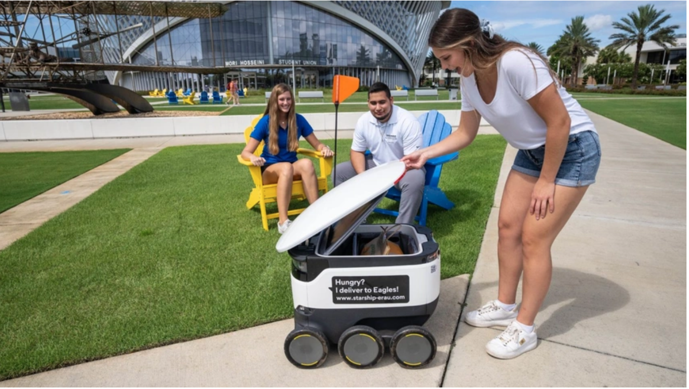
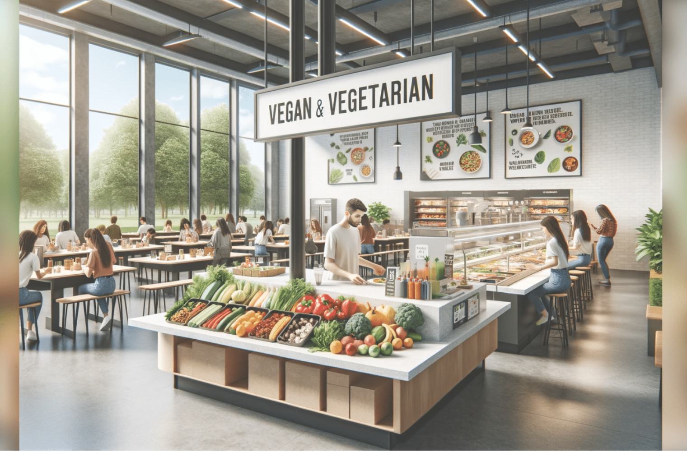

On-campus: The Green Grocer - An eco-friendly grocery store located at the heart of the campus, offering locally sourced organic produce and sustainable packaged goods.
The Green Grocer is a cornerstone of sustainability on campus. Located at the heart of the campus, it offers a wide selection of locally sourced organic produce and sustainable packaged goods. From fresh fruits and vegetables to pantry staples, students can find a variety of eco-friendly options to support their sustainable lifestyle. The Green Grocer also emphasizes waste reduction by offering bulk food items and encouraging the use of reusable containers.
Off-campus: Fresh Farms Market - A community-supported grocery store committed to sustainability, located just a few blocks from campus.
Fresh Farms Market is a community-supported grocery store committed to sustainability. Just a few blocks from campus, it provides students with access to high-quality, sustainable food options. The market sources its products from local farmers and producers, reducing carbon emissions associated with transportation and supporting the local economy. With a focus on seasonal and organic offerings, Fresh Farms Market promotes environmental stewardship and healthy eating habits among students.
Tech-Integrated Dining

Experience the future of dining with technology-driven services:
Campus Dash: An innovative campus delivery service powered by AI and operated by students, providing quick and convenient access to a variety of cuisines from local restaurants. Order your favorite meals right from your smartphone and have them delivered to your dorm or study spot on campus within minutes.
Campus Dash revolutionizes dining on campus with its innovative AI-powered delivery service. Operated by students, Campus Dash offers quick and convenient access to a diverse range of cuisines from local restaurants. Using advanced algorithms, the platform optimizes delivery routes to minimize travel time and reduce carbon emissions. Students can order their favorite meals right from their smartphones and have them delivered to their dorms or study spots on campus within minutes, enhancing convenience without compromising sustainability.
Vegan and Plant-Based

Discover vegan-friendly options both on and around campus:
On-campus: The Green Leaf Cafe - A student-run cafeteria offering delicious vegan and plant-based meals crafted from locally sourced ingredients.
The Green Leaf Cafe is a student-run cafeteria dedicated to promoting vegan and plant-based eating. With a focus on delicious and nutritious meals crafted from locally sourced ingredients, it offers a variety of options to suit every palate. From hearty grain bowls to flavorful salads, students can enjoy a satisfying meal while supporting sustainable food practices. The cafe also hosts educational events and cooking workshops to inspire students to adopt a more plant-forward lifestyle.
Off-campus: Veggie Delights - A vegan restaurant located within walking distance from the campus, offering a diverse menu of plant-based dishes to satisfy your cravings.
Veggie Delights is a popular vegan restaurant conveniently located within walking distance from the campus. Specializing in creative and flavorful plant-based dishes, it offers a diverse menu that caters to vegan and non-vegan diners alike. With a commitment to sustainability, Veggie Delights sources its ingredients from ethical suppliers and minimizes food waste through thoughtful menu planning and composting initiatives. Students can indulge in guilt-free dining while contributing to a healthier planet.